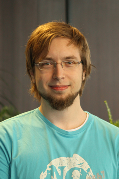

<div class="main-content hcenter-container">
    <div class="hcenter about-container pure-g">
            <div class="pure-u-1-4">
                
            </div>

            <div class="about-text pure-u-3-4">


                <h1> About me </h1>
                <p> 
My name is Sebastian Hubenschmid. I'm a 23 years old computer scientist from a small village in southern Germany, and I currently live near Canterbury, UK.
                </p>


                <h1> About my work </h1>
                <p> 
I'm a Junior Software Developer at ionCube Software LLP, and I'm close to finishing my B.Sc. in Computer Science at the University of Konstanz. I specialised in Human-Computer Interaction (HCI) in university, and use mainly C, C++ and C# for my applications as well as AngularJS for any web front-end cases.
                </p>


                <h1> About this site </h1>
                <p> 
This website serves as a central place for information about me, such as links to my social media profiles or public information about projects I participated in. The links provided in the sidebar do not represent all my presences on the internet, but these are the ones that I keep up-to-date.
                </p>
            </div>
    </div>
</div>

